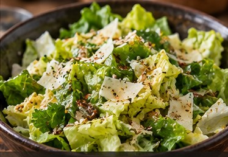

American · Side · Serves: 4 Time: 10 minutes
Garlic-Herb Lettuce Salad

Ingredients
- 6 cups, washed and dried Leaf lettuce
- 1/4 cup torn Genovese basil
- 1/4 cup shaved or grated Parmesan
- 2 Tbsp Lemon juice
- 3 Tbsp Olive oil
- 1 small clove, finely grated Garlic
- 1 tsp Dijon mustard
- 1 tsp Honey
- to taste Kosher salt & pepper
Instructions
- Whisk lemon juice, olive oil, garlic, Dijon, honey, salt and pepper.
- Toss lettuce and basil with just enough dressing to coat lightly.
- Finish with Parmesan and serve immediately.